Antes de rediseñar el home, comparé cómo se comunican cinco referentes, leí el comportamiento interno y llevé a los equipos a proponer y defender cómo debe comunicar el nuevo home.
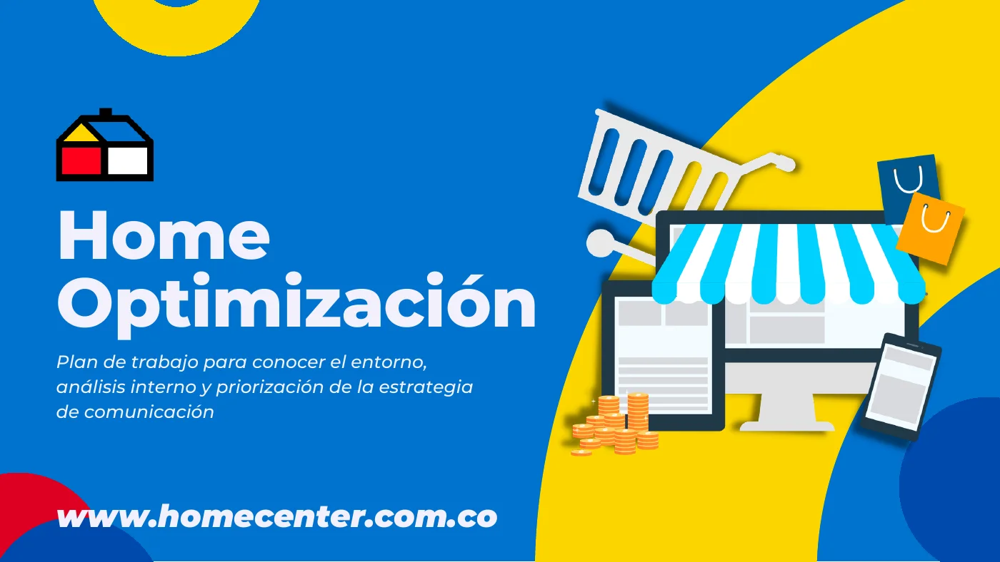
Optimizar el journey, la encontrabilidad y la utilidad de la experiencia del home.
Un benchmark de cinco referentes y una lectura del comportamiento interno del home.
Cuatro pilares de comunicación para alinear qué debe lograr el home.
Los equipos proponen, defienden y votan la mejor propuesta de optimización.
Optimizar el journey del usuario, la encontrabilidad y la utilidad de la experiencia en el home, alineando a los equipos que lo alimentan.
Cómo se mueve la gente desde el home hacia las páginas que importan.
Que lo que el usuario busca sea fácil de ubicar y de alcanzar.
Que cada zona del home tenga un propósito claro de comunicación.
Armé un plan en cuatro fases y convoqué a producto digital, comercial, contenidos y mercadeo para decidir juntos.
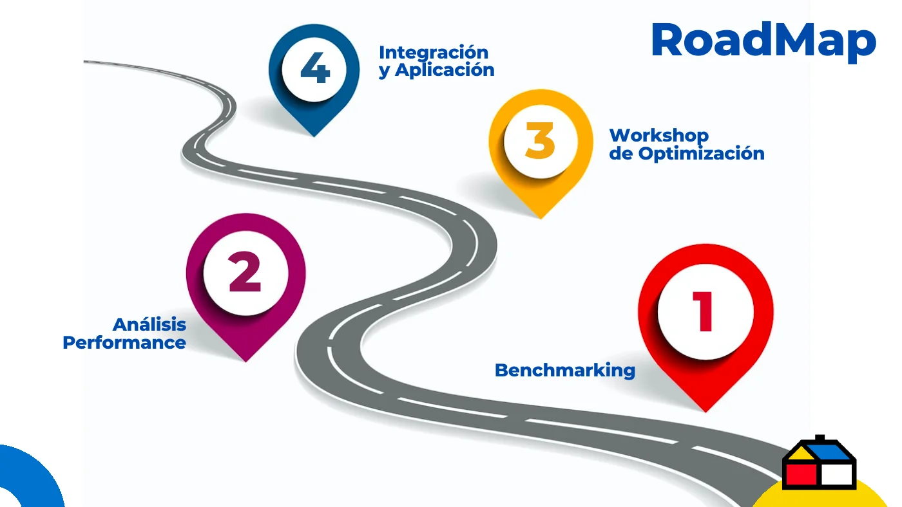
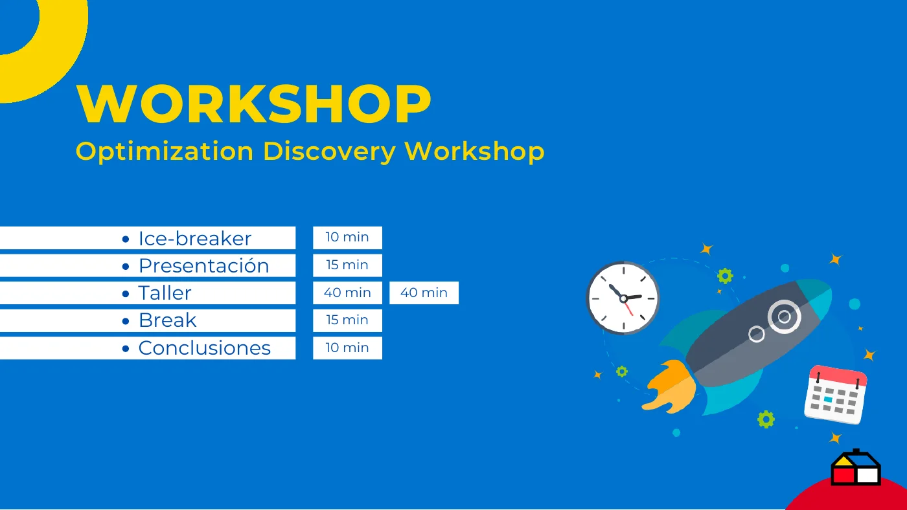
Comparar cómo se comunican los referentes con las mismas preguntas.
Cómo lo apliquéPara cada referente respondí a quién le habla, de qué manera y a través de qué.
Leer datos de uso para ubicar fricciones y oportunidades.
Cómo lo apliquéRevisé embudos, mapas de interacción y tipos de página para entender cómo se usa el home hoy.
Diseñar con los equipos y elegir juntos lo más valioso.
Cómo lo apliquéEquipos proponen, defienden y votan la mejor propuesta de optimización.
Dividí la comunicación del home en cuatro pilares y miré cuánto peso le da cada referente.
Catálogo basado en gustos y preferencias.
Ofertas de valor y servicios que apoyan el objetivo de interacción.
Comunicación comercial que busca maximizar la conversión.
Espacios que generan conexión, comunidad y proyectos.
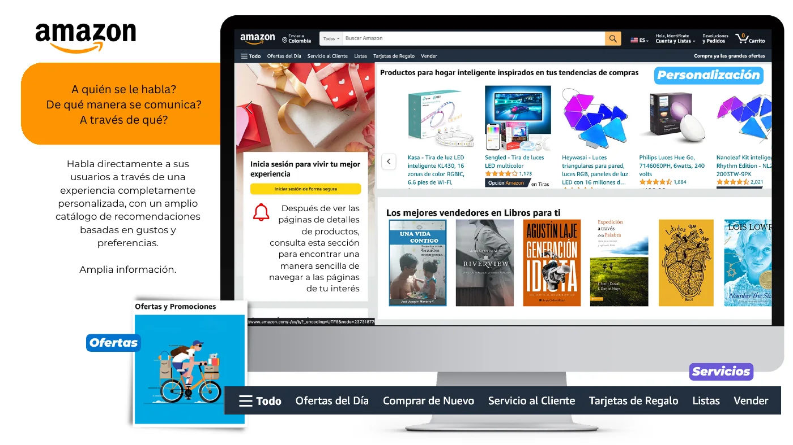
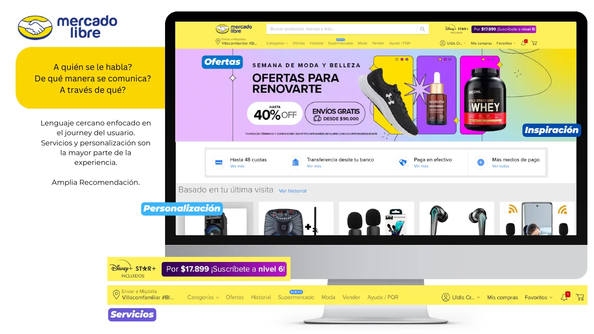
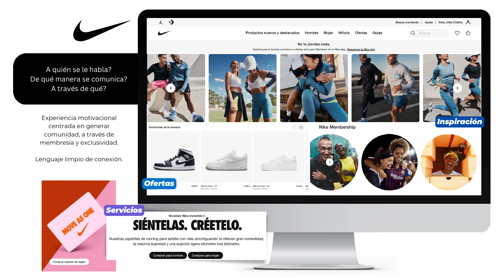
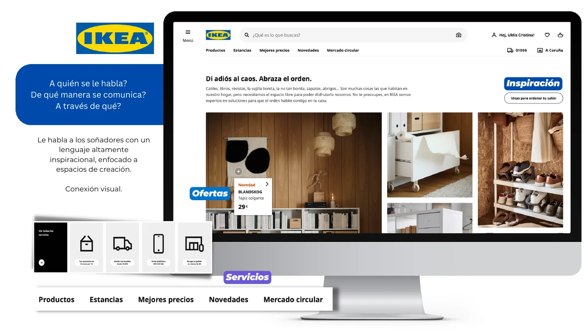
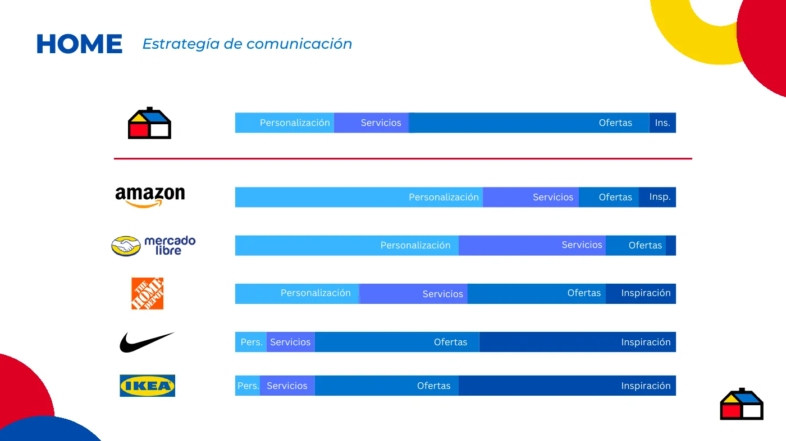
Una parte muy grande de las sesiones del home usa la barra de búsqueda.
Las páginas de producto reciben bastante más visitas que el promedio de otros tipos de página.
La etapa con más fuga del embudo de conversión fue la de despacho.
Por confidencialidad muestro solo hallazgos relativos, sin cifras internas absolutas.
Antes del taller propuse cuatro objetivos de comunicación, para que los equipos debatieran sobre una base común.
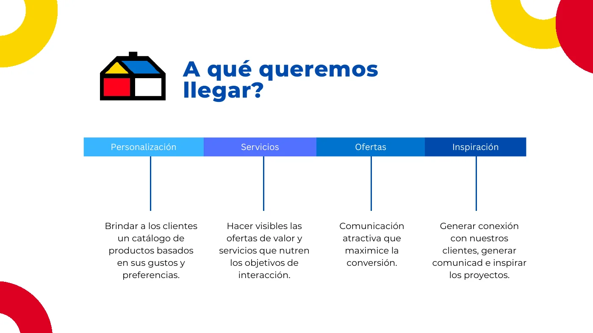
Los equipos diseñan una propuesta visual y estratégica del home, la defienden y eligen la mejor.
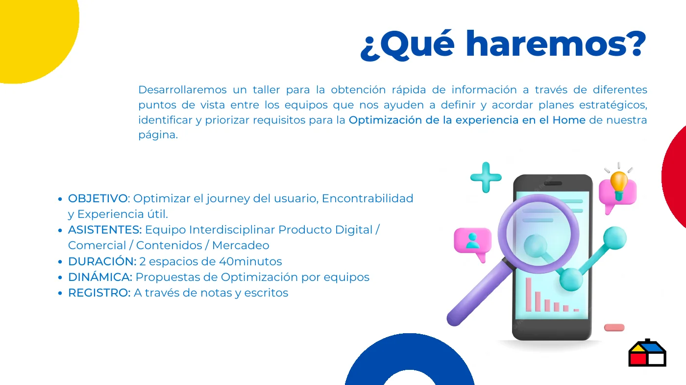
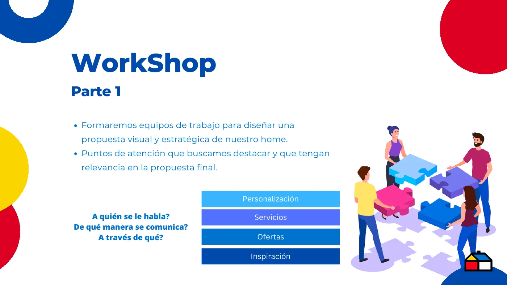
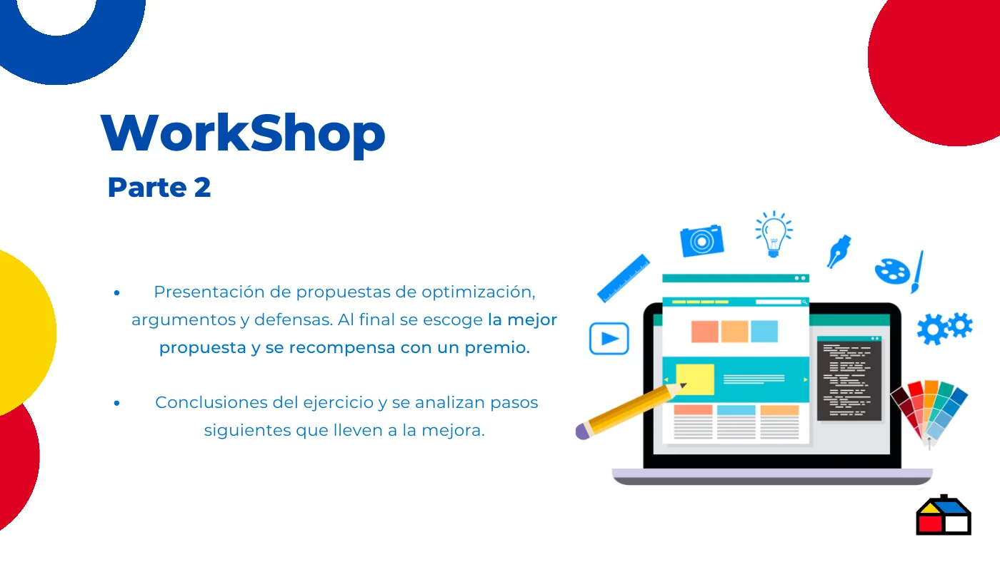
El formato lleva de la evidencia a una decisión compartida. Esto es lo que deja la sesión.
Cada equipo termina con una propuesta visual y estratégica del home.
La votación señala qué enfoque tiene más respaldo entre las áreas.
Las conclusiones alimentan la fase de integración y aplicación del plan.
Este caso muestra el diseño y las conclusiones de la sesión, no resultados medidos.